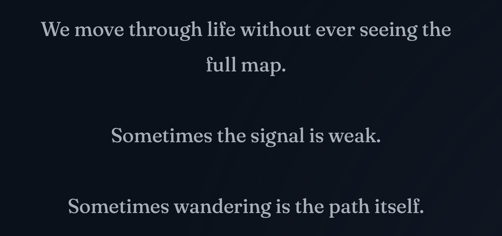

At the beginning of this year, you probably imagined becoming a slightly different person.
Maybe you wrote down some goals.
Saved a few articles.
Felt a brief but genuine urge to restart your life in some way.
For a moment, the future version of yourself felt surprisingly clear.
You could almost see who you might become if you stayed on that path long enough.
But a few months later, many of those feelings have already faded.
Not because you were never serious.
But because:
we are losing connection with our past selves more and more frequently.
Modern Life Constantly Interrupts Continuity
Messages.
Work.
Feeds.
Short videos.
New emotions.
New problems.
Endless context switching.
Our attention keeps moving.
And slowly, many things that once felt deeply important are not abandoned…
just overwritten.
Most People Don't Lack Discipline
A lot of people think the reason we fail to achieve long-term goals is lack of discipline.
But I increasingly feel that is not the real problem.
Because most of the time, people are not lacking insight.
In fact, many important things were once seen very clearly.
There were moments when you genuinely believed you were about to start a different life.
The problem is:
those moments never entered a system that could continue holding them over time.
Modern systems are very good at creating moments.
But they are terrible at preserving continuity.
Every day, you encounter new ideas, new opportunities, new desires, new goals.
But almost every platform is designed to push you toward the next refresh.
Not toward staying with something long enough for it to grow.
As a result, many things that could have evolved into meaningful parts of your life eventually become:
an old note
a forgotten bookmark
a page that was never opened again
Sometimes, even the version of yourself who once cared deeply about those things slowly disappears with them.
Willpower Is Not the Answer
So over time, I started realizing something important.
Humans do not operate on willpower alone.
We operate on:
continuity of environment.
If a wish only exists inside one emotional night, it will probably disappear.
If an important thought has nowhere to return to, it rarely survives long enough to mature.
This is why I increasingly feel that what we need is not simply more productivity tools.
What we need is a space where different versions of ourselves can remain connected across time.
It does not need to be complicated. It does not even need to be perfect.
Sometimes it is simply:
a long-running note
an AI conversation that continues for months
a page for recording personal signals
a timeline that allows you to revisit your own evolution
A Small Personal Experiment
Recently, I started building small personal signal spaces — fragments of thoughts, emotions, unfinished ideas, recurring patterns.
Not to optimize myself.
But to reduce the chances of losing important parts of my inner continuity.

Because the form is not what matters.
What matters is:
whether the things that would normally disappear are given a chance to continue existing.
In the end, life is rarely changed by one dramatic decision.
More often, it changes because:
a small but genuine thought was allowed to survive long enough to grow.